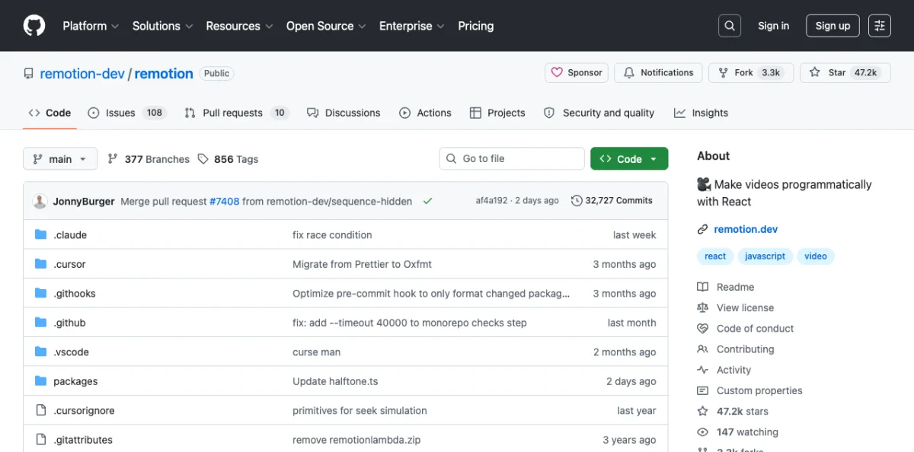
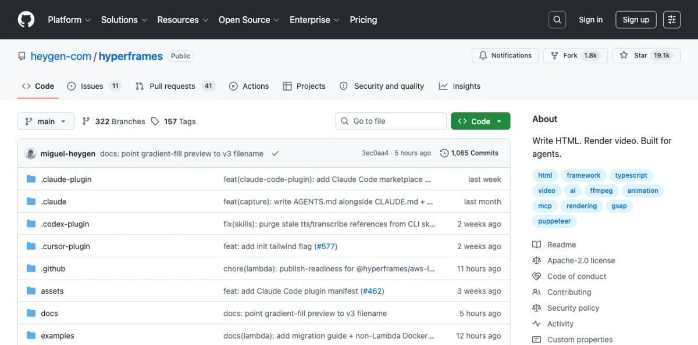
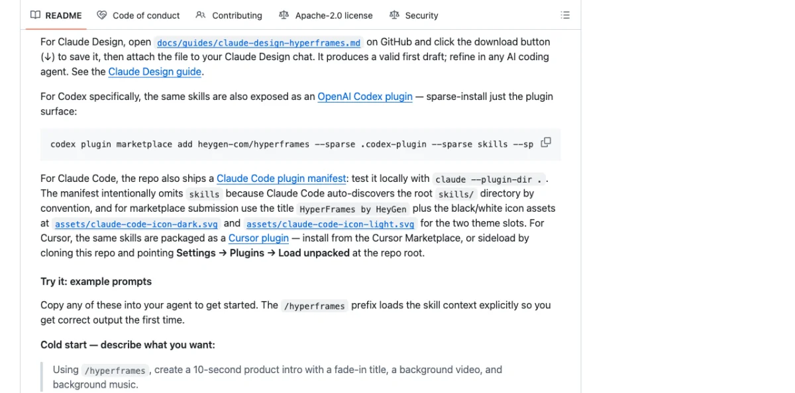
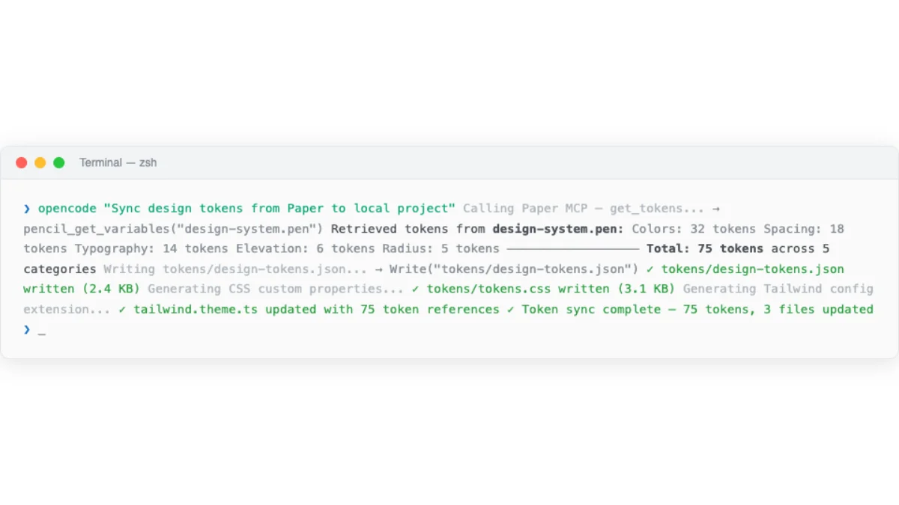
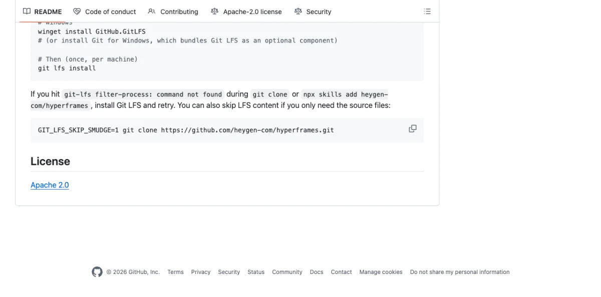

Why Agents Need Programmatic Video
Traditional video tools --- Premiere, After Effects, Final Cut --- require GUI interaction. Agents can't click timeline scrubbers. They can't drag keyframes. They can't adjust bezier curves on easing functions with a mouse. Programmatic video frameworks solve this by treating video as code: versionable, diffable, reproducible.
The shift mirrors what happened with design. Design moved from GUI-only tools (Photoshop) to code-friendly formats (CSS, HTML, design tokens). Video is making the same transition. The timing matters because agents can now produce video artifacts the same way they produce code and design --- by writing text that compiles to frames.
Three use cases drive agent-driven video production in practice. First, product marketing: a startup needs a 60-second product intro, and the designer writes it once with code rather than editing frames manually. Second, personalized video at scale: a SaaS company generates thousands of onboarding videos, each with the customer's name and usage data. Third, design documentation: a team produces animated walkthroughs of UI flows, generated directly from the design system tokens covered in Chapter 08.
Two approaches have emerged. Remotion uses React components as the authoring format. Hyperframes uses HTML + GSAP. The philosophical difference sounds minor. In practice, it shapes everything: how you author, how you preview, how you debug, how you render, and what your license allows.
Remotion: React-Based Video Production
Remotion is the established player. Created by Jonny Burger (Remotion AG), 47.1k GitHub stars, 3.3k forks, 622+ releases as of May 2026. The current version is v4.0.462. It's TypeScript-first (74.5%), with PHP for Lambda rendering and Rust for native components. The ecosystem is substantial: 3M npm installs, 800+ pages of documentation, 35+ templates, 8000+ Discord members, and 300+ contributors. Trusted by GitHub, Musixmatch, Wistia, and SoundCloud.

The mental model: your video is a React component tree. Each frame is a render of that tree at a specific point in time. The framework handles the mapping between time and component state. If you know React, you know most of Remotion already.
Core primitives:
| Primitive | Purpose | Key Props |
|---|---|---|
<Composition> |
Registers a renderable video | id, fps, durationInFrames, width, height |
<Sequence> |
Time-shifts child components | from, durationInFrames |
<Series> |
Plays sequences back-to-back | Auto-calculated timing |
spring() |
Physics-based animation | mass, damping, stiffness |
interpolate() |
Maps frame number to value range | inputRange, outputRange, extrapolateLeft/Right |
useCurrentFrame() |
Hook for current frame number | None |
useVideoConfig() |
Hook for video metadata | Returns fps, width, height, durationInFrames |
// src/Root.tsx — register compositions
import { Composition } from 'remotion';
import { ProductIntro } from './ProductIntro';
export const RemotionRoot: React.FC = () => {
return (
<Composition
id="ProductIntro"
durationInFrames={150}
fps={30}
width={1920}
height={1080}
component={ProductIntro}
/>
);
};// Frame-dependent rendering
import { AbsoluteFill, useCurrentFrame, interpolate } from 'remotion';
export const ProductIntro = () => {
const frame = useCurrentFrame();
const opacity = interpolate(frame, [0, 30], [0, 1], {
extrapolateRight: 'clamp',
});
const scale = interpolate(frame, [0, 30], [0.8, 1], {
extrapolateRight: 'clamp',
});
return (
<AbsoluteFill style={{
backgroundColor: 'var(--color-background)',
justifyContent: 'center',
alignItems: 'center',
}}>
<div style={{ opacity, transform: `scale(${scale})` }}>
<h1 style={{ fontFamily: 'var(--font-display)' }}>
Introducing the Future
</h1>
</div>
</AbsoluteFill>
);
};// Sequences for timing control
import { Sequence } from 'remotion';
const ProductTrailer = () => {
return (
<>
<Sequence durationInFrames={30}>
<LogoReveal />
</Sequence>
<Sequence from={30} durationInFrames={60}>
<FeatureShowcase />
</Sequence>
<Sequence from={90} durationInFrames={60}>
<CallToAction />
</Sequence>
</>
);
};The spring() function deserves a closer look. Unlike CSS transitions with fixed durations, spring animations are physics-based. You set mass, damping, and stiffness, and the framework calculates the animation curve. This produces motion that feels natural --- objects accelerate, overshoot slightly, and settle.
import { spring, useCurrentFrame, useVideoConfig } from 'remotion';
const AnimatedTitle = () => {
const frame = useCurrentFrame();
const { fps } = useVideoConfig();
const scale = spring({
frame,
fps,
config: {
stiffness: 100,
damping: 10,
mass: 1,
},
});
return (
<div style={{
transform: `scale(${scale})`,
fontFamily: 'var(--font-display)',
}}>
Hello World
</div>
);
};Sequences can nest. A sequence inside another sequence is offset by the parent's from value. This composition pattern maps naturally to how real videos are structured: acts contain scenes, scenes contain shots, shots contain elements.
Remotion Studio provides a browser-based preview with timeline scrubbing, a props editor, and a render button. You can deploy Studio to the cloud for non-technical team members to preview and render videos without touching code.
The rendering targets are extensive:
$ npx remotion render ProductIntro # local MP4
$ npx remotion render --sequence # image sequence
$ npx remotion render --output custom.mp4 # custom output path
$ npx remotion render --codec prores # ProRes for editing
$ npx remotion render --frames=0-29 # render specific rangeBeyond local CLI rendering, Remotion supports Node.js SSR API (renderMedia()), AWS Lambda for distributed rendering, GitHub Actions for CI/CD, and Google Cloud Run (alpha as of May 2026). The Lambda integration is mature and production-tested for hyperscale rendering. The SSR API lets you render from any Node.js process, which is particularly useful for agent-driven pipelines.
Setting Up a Remotion Project with Agent Assistance
Quick start:
$ npx create-video@latestThis scaffolds a Remotion project with a src/Root.tsx that registers compositions. Each composition is a React component that receives props and renders frames.
Remotion has first-class agent support. The repository includes .claude/ and .cursor/ directories with CLAUDE.md and AGENTS.md files. This means Claude Code and Cursor understand Remotion's conventions out of the box.
my-video/
├── src/
│ ├── Root.tsx # registers all compositions
│ ├── ProductIntro.tsx # composition component
│ └── lib/
│ └── animations.ts # shared animation helpers
├── public/
│ └── assets/ # images, videos, fonts
├── package.json
└── remotion.config.tsAgents can scaffold the project, write composition components, configure rendering, and even set up Lambda deployment. The Zod schema support on <Composition> enables visual editing of props in Remotion Studio, which agents can configure:
import { Composition } from 'remotion';
import { z } from 'zod';
const productSchema = z.object({
title: z.string(),
subtitle: z.string(),
accentColor: z.string(),
logoUrl: z.string(),
});
export const RemotionRoot = () => (
<Composition
id="ProductIntro"
component={ProductIntro}
schema={productSchema}
defaultProps={{
title: 'Product Name',
subtitle: 'Tagline goes here',
accentColor: '#E94560',
logoUrl: '/assets/logo.svg',
}}
durationInFrames={150}
fps={30}
width={1920}
height={1080}
/>
);The agent workflow: you describe the video, the agent writes the composition components, you preview in Remotion Studio, you iterate, then you render. The tight integration with design tokens (from Chapter 08) means your video can share the same var(--color-primary) variables as your web UI.
Remotion also provides a Player component for embedding video previews in web applications and a Recorder for screen recording. The Editor Starter is a commercial template for building custom video editing applications on top of Remotion's rendering engine.
Hyperframes: HTML-Native Video Built for Agents
Hyperframes takes a fundamentally different approach. Created by HeyGen, 19k GitHub stars, 1.8k forks, Apache 2.0 license. The tagline is direct: "Write HTML. Render video. Built for agents."

Compositions are plain HTML files with data attributes. No React. No build step. The HTML file is both the render layer and the editable source of truth. This is the same principle that powers Huashu Design (Chapter 07) for prototypes and slide decks --- HTML as the native artifact, not an export target.
The key insight from HeyGen's internal evaluation: LLMs produce more creative output writing HTML+GSAP than React compositions. HTML is lower-friction for language models. No imports to manage. No component lifecycle to reason about. No JSX syntax to get right. The agent writes declarative HTML, adds animation attributes, and the framework handles the rest.
| Attribute | Purpose |
|---|---|
data-composition-id |
Identifies the root element |
data-start |
Start time in seconds |
data-duration |
Duration in seconds |
data-track-index |
Layer ordering (higher = on top) |
data-width / data-height |
Composition dimensions |
data-volume |
Audio volume (0-1) |
<div id="root"
data-composition-id="product-intro"
data-start="0"
data-width="1920"
data-height="1080">
<video id="clip-1"
data-start="0"
data-duration="5"
data-track-index="0"
src="intro.mp4"
muted playsinline></video>
<h1 id="title"
class="clip"
data-start="1"
data-duration="4"
data-track-index="1"
style="font-size: 72px; color: white;">
Welcome to Hyperframes
</h1>
<audio id="bg-music"
data-start="0"
data-duration="5"
data-track-index="2"
data-volume="0.5"
src="music.wav"></audio>
</div>No React. No JSX. No build step. You write HTML, open it in a browser to preview, and render it to MP4. The data attributes tell the renderer when each element appears, for how long, and in what layer. The track index system is like a video editor's timeline --- elements on higher tracks overlay elements on lower tracks.
The CLI is deliberately non-interactive by default:
$ npx hyperframes init my-video
$ cd my-video
$ npx hyperframes preview # live preview with hot reload
$ npx hyperframes render # render to MP4
$ npx hyperframes render --output demo.mp4
$ npx hyperframes add flash-through-white # add catalog block
$ npx hyperframes lint # lint composition
$ npx hyperframes doctor # diagnose issuesThe --human-friendly flag enables interactive mode, but the default is flag-driven. This is a deliberate design choice: agents work better with non-interactive CLIs. Every command accepts flags and exits cleanly.
Hyperframes ships with a catalog of 50+ ready-to-use blocks. These are pre-built composition snippets for common patterns: flash-through-white, instagram-follow, title cards, lower thirds, transitions. You add them to your project with npx hyperframes add <block-name> and customize the data attributes. For agents, this means the agent can compose complex videos from building blocks rather than writing every element from scratch.
The Frame Adapter pattern is where Hyperframes' architecture really matters. It supports GSAP, Lottie, CSS animations, Three.js, Anime.js, and Web Animations API. For each adapter, Hyperframes handles deterministic seeking --- it pauses the animation library and scrubs to frame / fps before each capture. This eliminates the wall-clock dependency that plagues other renderers.
My take: Hyperframes' seek-based rendering is technically superior to Remotion's wall-clock approach for animation libraries. GSAP in Remotion races through timelines at wall-clock speed during render, producing mostly-empty frames after the initial frames. Hyperframes pauses GSAP, seeks to the exact time, then captures. If your video uses GSAP heavily, this alone is reason to choose Hyperframes.
Setting Up Hyperframes with AI Agents
The recommended path is skill-based:
$ npx skills add heygen-com/hyperframesThis installs 13 skills that teach the agent framework-specific patterns. Skills register as slash commands in Claude Code: /hyperframes, /hyperframes-cli, /hyperframes-media, /gsap, /lottie, /threejs, and more.
Requirements: Node.js >= 22 and FFmpeg.
For Codex and Cursor, Hyperframes provides dedicated plugins:
# Codex plugin
$ codex plugin marketplace add heygen-com/hyperframes \
--sparse .codex-plugin --sparse skills --sparse assets
# Claude Code plugin
$ claude --plugin-dir .Example agent prompts that work well:
"Create a 10-second product intro with a fade-in title."
"Turn this CSV into an animated bar chart race."
"Build a 60-second explainer video with 4 scenes."
"Add background music with ducking when narration plays."The hyperframes init command installs skills automatically, so you can hand a project to an agent at any point in its lifecycle. Media preprocessing skills handle TTS (via Kokoro), transcription (via Whisper), and background removal (via u2net). The TTS integration is particularly useful for narrated videos --- the agent generates voiceover, measures the duration, and synchronizes visuals to the audio timeline automatically.
There's also a remotion-to-hyperframes skill for migrating React compositions to HTML. Useful if you start with Remotion and want to switch. The migration handles data attribute mapping, sequence-to-track conversion, and GSAP timeline adaptation.
Hyperframes supports two capture modes. BeginFrame mode runs on Linux and is fully deterministic --- no wall-clock dependency. Screenshot mode runs on macOS and Windows, falling back automatically when BeginFrame isn't available. For production CI/CD pipelines, Linux with BeginFrame mode is the recommended setup.
Animation Runtimes: GSAP, CSS, Lottie, Three.js
The animation runtime is the most consequential technical difference between Remotion and Hyperframes. It affects how every library behaves during rendering. Understanding this difference is essential for choosing the right tool.

GSAP: The primary animation runtime for Hyperframes. Hyperframes pauses GSAP and seeks it to frame / fps before each capture. In Remotion, GSAP's internal performance.now() ticker races through the timeline at wall-clock speed during render. The result: mostly-empty frames after the initial frames. This is not a minor issue. It makes GSAP effectively unusable in Remotion for any non-trivial animation.
// GSAP in Hyperframes — deterministic seeking
const tl = gsap.timeline({ paused: true });
tl.from("#title", { opacity: 0, y: 50, duration: 1 })
.to("#title", { opacity: 1, y: 0, duration: 0.5 });
// Hyperframes pauses this timeline and seeks to frame/fps before each captureCSS Animations: Both tools support CSS. Hyperframes uses the Web Animations API adapter for frame-accurate seeking. Remotion renders CSS animations frame-by-frame but can struggle with complex keyframe sequences that depend on computed styles.
Lottie: Hyperframes supports Lottie via window.__hfLottie registration for deterministic seeking. Remotion requires the @remotion/lottie package, which provides a springify utility but adds a dependency.
Three.js: Hyperframes renders from hf-seek events and window.__hfThreeTime instead of wall-clock time. Remotion has @remotion/three for React Three Fiber integration, which works well if you're already in the React ecosystem. The React Three Fiber integration is one of Remotion's genuine strengths --- you get the full React component model for 3D scenes.
Anime.js: Hyperframes registers on window.__hfAnime for deterministic seeking. Remotion has no native Anime.js adapter.
| Runtime | Remotion | Hyperframes |
|---|---|---|
| GSAP | Wall-clock issues during render | Seekable, frame-accurate |
| CSS Animations | Frame-by-frame render | Web Animations API adapter |
| Lottie | @remotion/lottie package |
window.__hfLottie registration |
| Three.js | @remotion/three (React Three Fiber) |
hf-seek events |
| Anime.js | No native adapter | window.__hfAnime |
| WAAPI | Not documented | document.getAnimations() seeking |
The pattern is clear. Hyperframes supports more animation runtimes with deterministic seeking. Remotion supports fewer runtimes but integrates deeply with the React ecosystem. If your video relies on GSAP, the choice is straightforward. If your video is pure React with spring animations, Remotion is the natural fit.
Rendering, Preview, and the Dev Loop
The development loop differs significantly between the two tools. This affects how fast you can iterate, which matters more in agent workflows than in traditional video production.

Remotion Studio: A browser-based application with a sidebar, timeline, props editor, and render button. You edit code, the studio live-reloads, you scrub the timeline to check timing. Deployable to the cloud for team access. The props editor is particularly useful with Zod schemas --- you can adjust text, colors, and timing visually without touching code. This is Remotion's strongest UX advantage.
Hyperframes Preview: npx hyperframes preview opens a live preview in the browser with instant hot reload. No build step. Edit the HTML, save, see changes. Simpler than Remotion Studio but less feature-rich --- no timeline scrubbing, no props editor. The lack of a build step is the key advantage. In agent workflows, every second of iteration latency compounds. Hyperframes eliminates the webpack compilation that Remotion requires after each code change.
Remotion Render: CLI, Node.js SSR API (renderMedia()), AWS Lambda (distributed and production-tested), GitHub Actions, Google Cloud Run (alpha). The Lambda story is the clear leader in distributed rendering. For high-volume video production (thousands of personalized videos), Lambda scales horizontally. The SSR API lets you render from any Node.js process --- useful for agent pipelines that need to produce video as part of a larger workflow.
Hyperframes Render: npx hyperframes render --output output.mp4. Single-machine today. Docker support exists for containerized workflows. The stateless architecture doesn't block future distributed rendering, but as of May 2026, it hasn't shipped. This is Hyperframes' most significant gap compared to Remotion.
$ npx remotion render ProductIntro # Remotion: local render
$ npx remotion lambda render ProductIntro # Remotion: distributed
$ npx hyperframes render # Hyperframes: local render
$ npx hyperframes render --output final.mp4 # Hyperframes: custom outputRemotion supports multiple output codecs: H.264, H.265, VP8, VP9, ProRes, AV1. Output formats include MP4, WebM, audio-only, image sequences, still images, GIF, and transparent video overlays. Hyperframes supports MP4 output and HDR via a two-pass compositing pipeline. For most use cases, MP4 covers what you need.
Common rendering issues and their fixes:
| Symptom | Cause | Fix |
|---|---|---|
| Blank frames in Remotion with GSAP | Wall-clock timing races ahead | Replace GSAP with interpolate() or spring() |
| Blurry text in Hyperframes | Missing device pixel ratio | Set data-scale attribute or render at 2x |
| Audio sync drift | Variable frame timing | Use fixed FPS; avoid dynamic duration calculations |
| Long render times locally | Single-threaded capture | Remotion: use Lambda. Hyperframes: use Docker parallelism. |
Remotion vs Hyperframes: An Honest Comparison
I've used both. Here's where each wins and loses.

| Dimension | Remotion | Hyperframes |
|---|---|---|
| Authoring format | React components (TSX) | HTML + CSS + GSAP |
| Build step | Required (webpack/bundler) | None --- index.html plays as-is |
| GSAP support | Wall-clock during render (broken) | Seekable, frame-accurate |
| Arbitrary HTML/CSS | Must rewrite as JSX | Paste and animate |
| Distributed rendering | Lambda, production-ready | Single-machine today |
| HDR output | Not documented | Supported (two-pass) |
| Visual editor | Harder (code + build step) | Native (same DOM is editable) |
| License | Source-available, custom Remotion License | Apache 2.0 (OSI-approved) |
| Commercial pricing | Free for 3 people, paid above | Free at any scale |
| GitHub stars | 47.1k | 19k |
| Maturity | 622+ releases, v4.x | 137 releases, v0.6.x |
| Agent integration | CLAUDE.md, AGENTS.md in repo | 13 skills, plugins for 4 agents |
| React ecosystem | Full reuse | No React dependency |
The licensing difference deserves attention. Remotion is source-available under a custom license. Free for teams of 3 or fewer. Above that, you need a Company License: $25/month per seat (Creator tier), $100/month minimum with per-render pricing (Automator tier), or $500+/month (Enterprise). If you're rendering thousands of personalized videos via Lambda, the Automator pricing adds up.
Hyperframes is Apache 2.0. Free at any scale. No per-seat pricing. No per-render fees. For companies producing video at volume, this is a significant cost difference.
My take: If you're already in the React ecosystem and need distributed rendering at scale, Remotion is the right choice today. The Lambda story is mature and proven. If you're building agent-first video workflows, care about GSAP accuracy, or want to avoid license fees at scale, Hyperframes is the better bet. The licensing model alone tips the decision for many teams. I started with Remotion because of the ecosystem maturity. I switched to Hyperframes for agent workflows --- the build-step removal alone saves significant iteration time.
The practical decision framework:
- Choose Remotion if: your team writes React daily, you need Lambda-scale distributed rendering, you want the mature ecosystem with 800+ pages of docs, or you're building a video editor product (Editor Starter).
- Choose Hyperframes if: your primary author is an AI agent, you use GSAP for animations, you need HDR output, you want to paste arbitrary HTML and animate it, or license fees at scale are a concern.
- Choose based on animation runtime: if your video relies heavily on GSAP, Lottie, or Three.js animations, Hyperframes' seek-based rendering produces more reliable output than Remotion's wall-clock approach.
Both tools support design token integration from your design system (Chapter 08). Whether you write var(--color-primary) in a TSX component or an HTML data-attribute div, the token flows through correctly. This means your videos share the same visual language as your web UI, your prototypes, and your slide decks.
The video export pipeline from Huashu Design (Chapter 07) sits adjacent to both tools. Huashu produces HTML animations and exports them to MP4/GIF using its own render pipeline (25fps base + 60fps interpolation). For design-focused motion --- product intros, UI walkthroughs, animated infographics --- Huashu's pipeline is simpler and faster to set up. For complex video compositions with multiple clips, audio tracks, and transitions, Remotion or Hyperframes are the right tools.
Next: All of these design tools connect to agents through MCP servers. Chapter 10 covers the Model Context Protocol in depth --- how to configure MCP servers for Figma, Paper, Pencil, OpenPencil, and other tools, and how to chain them together for multi-tool workflows.